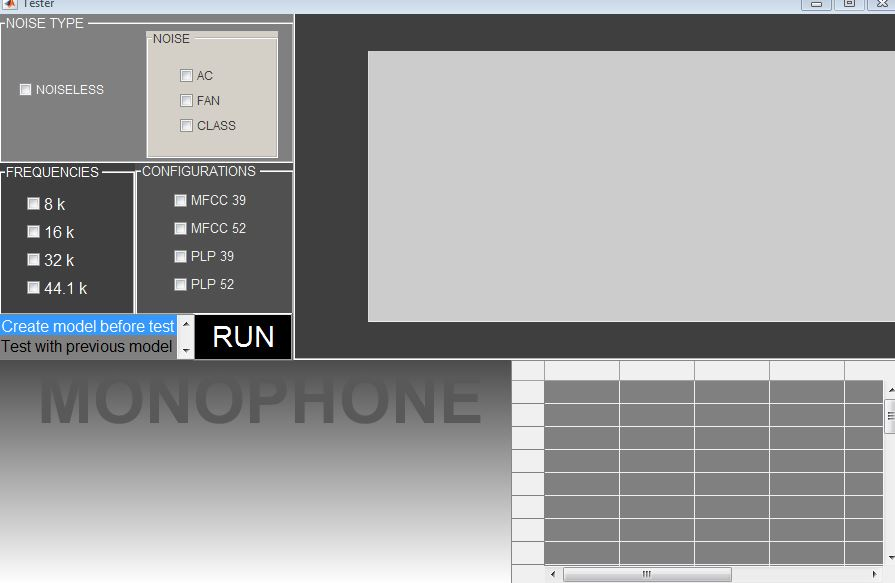
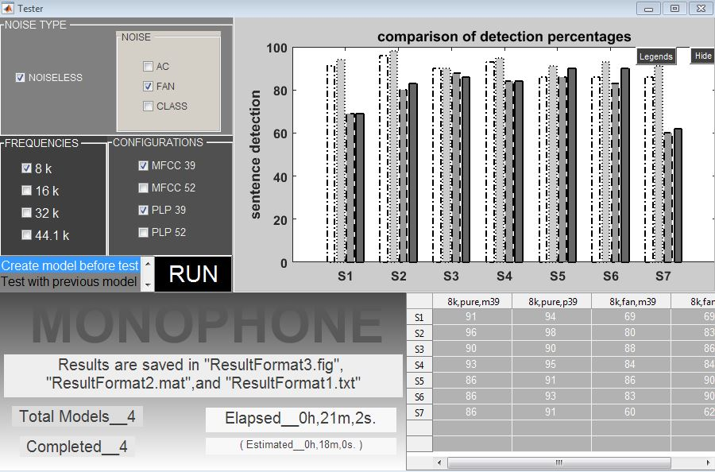
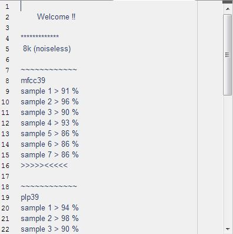
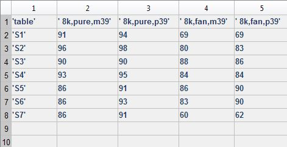
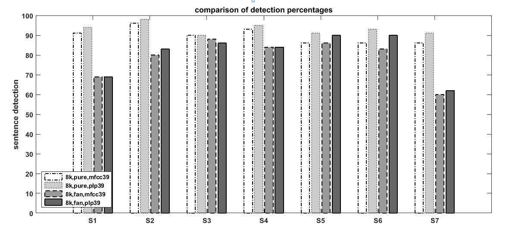

<h1 style="padding-left:4%;padding-top: 2%;padding-bottom: 2%;padding-right: 10%;border-bottom: 1px solid #BDBDBD;">


Sentence Detector for Monophone Model


</h1>


Matlab GUI based application


<h2><u>Start</u></h2>



<h2><u>End</u></h2>



<h2><u>Results saved in "ResultFormat1.txt" file</u></h2>



<h2><u>Results saved in "ResultFormat2.mat" file</u></h2>



<h2><u>Results saved in "ResultFormat3.fig" file</u></h2>



